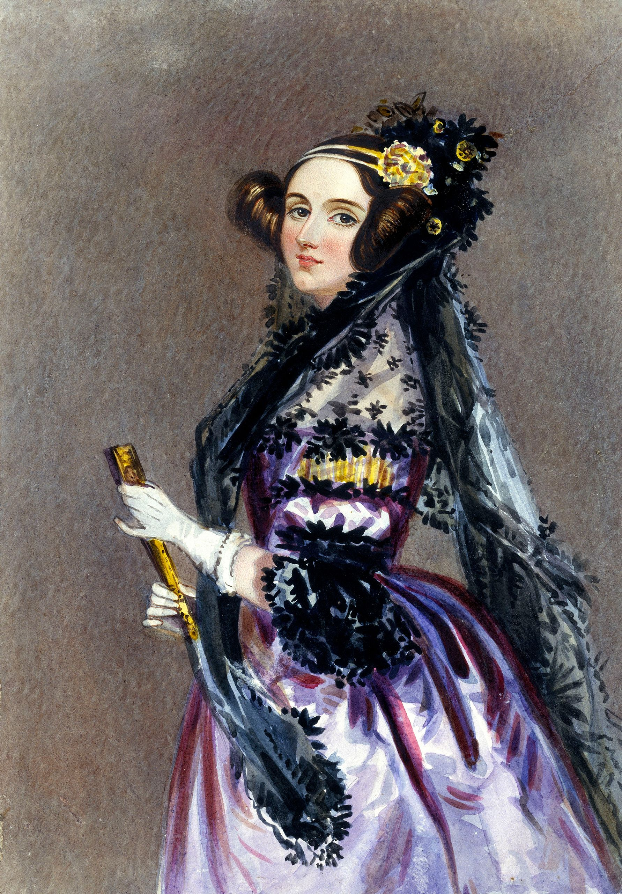
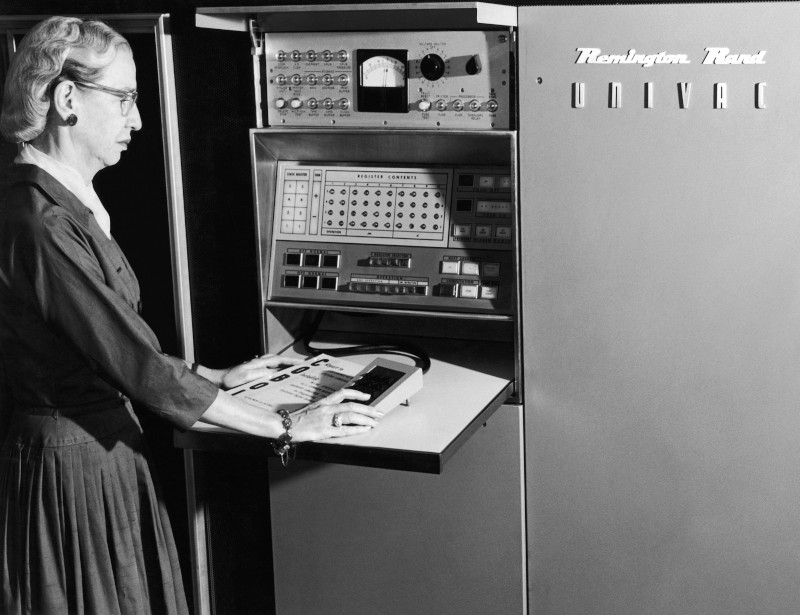
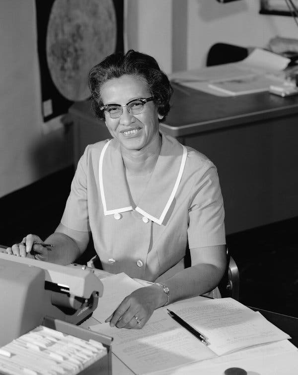
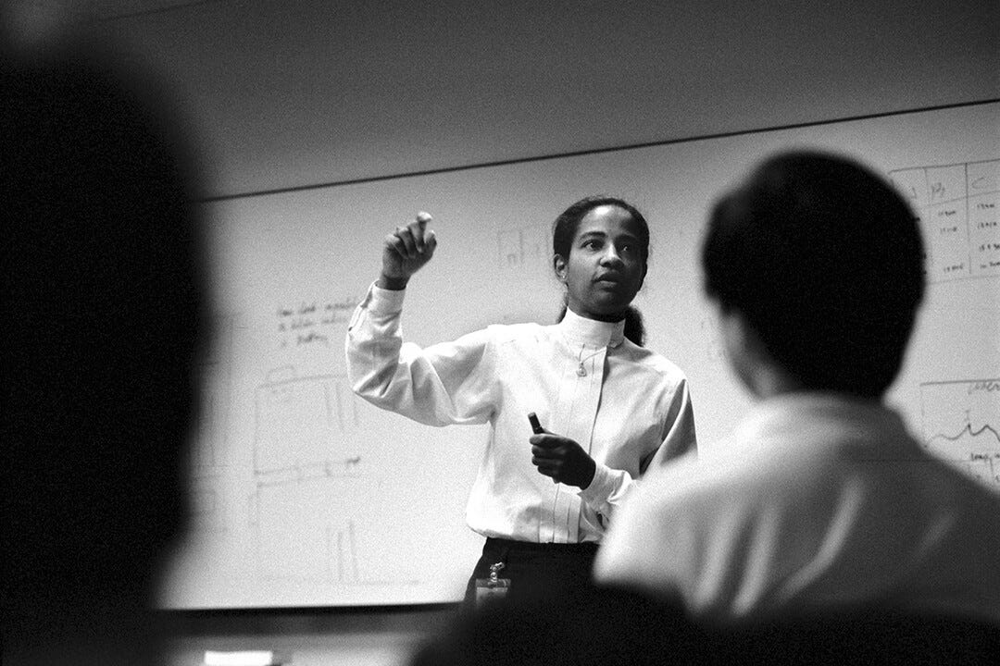
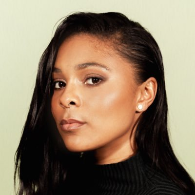

Today we're going to learn about computer programming! We'll learn what a program is, and some of the ways that people give instructions to computers. We'll also learn a little about how computer programming started, and about some of the women in computer science at its very beginnings and today.
Programming is writing instructions that tell a computer how to do something. Apps and games on a tablet or a phone are programs. So are webpages. But less-noticeable programs are everywhere, too: they control how a car's engine works, tell traffic lights when to turn red or green, add up your bill at a restaurant. Here are some things that I like about programming:

Around two hundred years ago a man named Charles Babbage had the idea to make a machine that used metal gears to do math. Many people consider this "Analytical Engine" to be the first computer, but he was unable to build the machine during his lifetime. Ada Lovelace was 18 years old when she learned about the machine at a lecture given by Babbage. She was the first person to realize that a computer could work with words and music in addition to numbers! Even though the machine had not been built yet, Ada Lovelace wrote an algorithm for using the machine to calculate a special list of numbers that help to do things like measure shapes. Today, this is known as the first computer program!
About 75 years ago, the first computers that ran on electricity had been built, and were mostly used by the military. Giving these computers instructions—programming them—was very hard because every computer understood different instructions, and every step had to be written as "machine code", a list of numbers that the computer could understand. Grace Hopper was a college math professor who joined the Navy during World War II, when she worked on a very early computer called the Mark I. She came up with the idea of a programming language that would let people write computer instructions using regular English words. People told her this idea was crazy! To make it work, she wrote a program (the hard way!) to turn these human-readable words into the "machine code" that computers could use. Today, we call this kind of program a "compiler".
At roughly the same time that Grace Hopper was inventing modern computer programming, there weren't yet enough electronic computers to do all of the math that groups like the US Army and NASA needed. So they hired people to do this work, and those people were called... "computers"! This work was not always fun, but it needed a lot of smart people. So they hired many kinds of people who were often discriminated against, like women, black people, and Jewish people. That's how Katherine Johnson was hired by NASA. Even while segregated into a separate group of Black workers, Katherine's math skills were so highly respected that people trusted her more than they did the electric computers of that time. In 1962, astronaut John Glenn (the first American to orbit the Earth) asked her to personally verify the flight path of his first launch into space.
35 years ago, you couldn't use a phone to draw a picture, check your calendar, play a game, or take notes; they could only make calls! Donna Auguste was one of the engineers who helped change that. At Apple, she led a team of software engineers building the Apple Newton, a handheld computer you could write on with a special pen. It was one of the very first computers small enough to carry in your bag, and it helped lead the way to the smartphones and tablets we use today.Today, most programmers are men, and a majority are white. But there are also many more programmers today than ever before, including people of different genders, different skin tones, different religions, and different family backgrounds. Here are a couple of women in computer science working today:

Taylor Poindexter is a programmer who's working today, as an Engineering Manager at the music service Spotify. She shares her insights and perspective online, especially about managing engineers and some of the quirks of many computer jobs (like being paid with company "stock"). I (and about 50,000 other people!) follow her on Twitter.This word still sounds, to me, like it should be something very complicated! But it’s just a list of instructions to complete a certain task or solve a problem. Think of things that you usually do the same way each time: getting ready for bed (say goodnight, brush teeth), going to the grocery store (walking/driving directions), making a little drawing you like to do. You follow an algorithm to make a paper fortune teller, and follow a different algorithm to use one. Opal has a few different algorithms for drawing cats. I have a different algorithm for cracking eggs than my Mom does.
Programmers try to find the best way to do something for specific situations. How exact do we need to be? How fast does it need to be? How many times do we have to do it? This can be a fun puzzle to solve, and is one kind of thing that programmers debate with each other.



